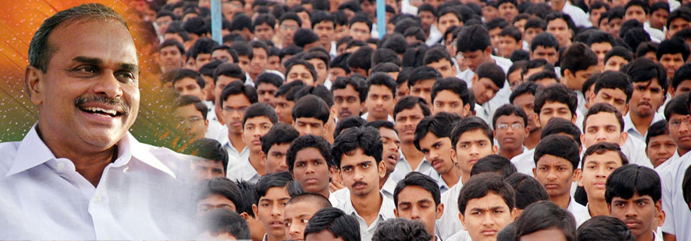
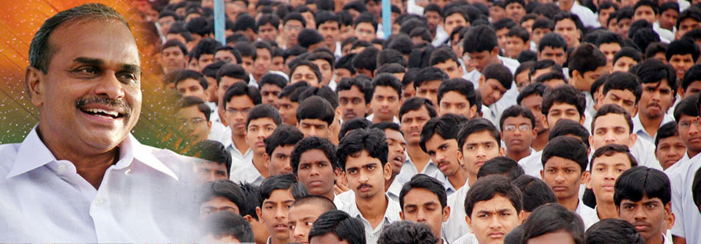

The idea to create IIITs in Andhra Pradesh came in April 2007, at the request of the Chief Minister of Andhra Pradesh. He was dissatisfied with the opportunities available to the rural youth and wanted to set up at least three IIITs in the three regions of Andhra Pradesh which would ensure better opportunities for rural students. A Task Force was created under the Chairmanship of Prof. K.C. Reddy. This Task Force produced a report to the government recommending the structure and functioning of the proposed institutions. In March of 2008, the AP Government created RGUKT by an act of the Legislature as a full-fledged university which would initially admit roughly the top 1% of the rural students into the three residential campuses. The first batch of about 6,500 tenth class graduates was admitted into a six year integrated program in August of 2008. The initial selection was based on the local best model where students receiving the top marks in every subject were selected. RGUKT Educational Objectives The primary objective of establishing RGUKT was to provide high quality educational opportunities for the aimed rural youth of Andhra Pradesh. The initial goal was that at least the top 1 % of the rural graduates would be given the opportunity to study at RGUKT. The top 1% of rural graduates is around 6,000 to 7,000 per year. Thus, the three campuses would need residential accommodation for about 36,000 students for the six year integrated program. At present, most universities in India and in Andhra Pradesh follow the affiliated college structure model where the main role of the university is to set the curriculum and conduct examinations to ensure that the students have indeed learned the material prescribed in the curriculum. Most colleges have an entering class of 100-300. Having an entry class of 6,000 students leads to issues of scale. This is unique to RGUKT and is being attempted for the first time in India. In the US, several of the larger universities do have enrolments of 20,000 to 30,000. However not all of them tend to be residential universities. Thus RGUKT, as a green field university, represents a unique experiment in the educational arena. The assumption is that ICT (Information and Communication Technologies), will permit the scaling of the learning environments by one to two orders of magnitude is currently possible. Another key educational objective of RGUKT is to use advances in learning sciences and explore the use of modern cognitive science tools in education and learning. Phrases such as "Learning by Example", "Learning by Doing", "Problem-Based Learning", "Self-Paced Learning", etc become facilitated when every student can be assured to have a personal computer that does not have to be shared with anyone else. Objectives of the University To impart to each student broad skills of Learning to Learn, Learning to Think and Learning to Live To reinforce core values of integrity, respect for all, and care for environment To disseminate and advance knowledge in the emerging fields such as Information Technology, Nanotechnology etc. To make special provisions for integrated courses including Humanities, Social Sciences and other interdisciplinary areas to impart broad-based education including soft skills. To function as a resource center for knowledge management and entrepreneurship development in the emerging technologies. To establish close linkage with industry to make teaching and research at the institutes relevant to the needs of the economy, at national and global levels.